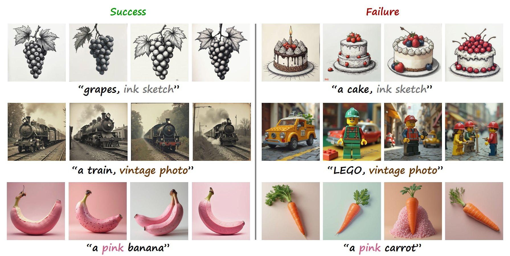
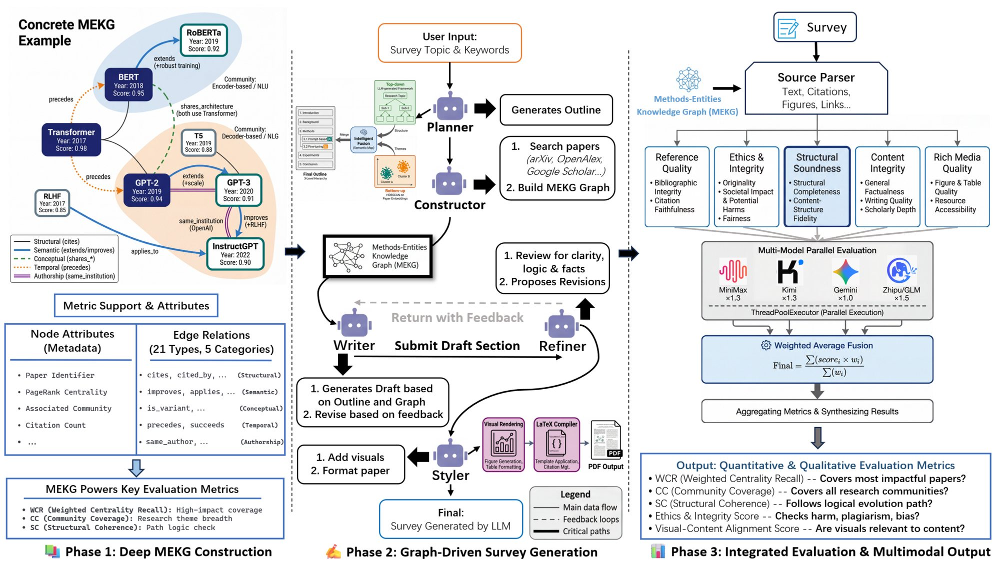
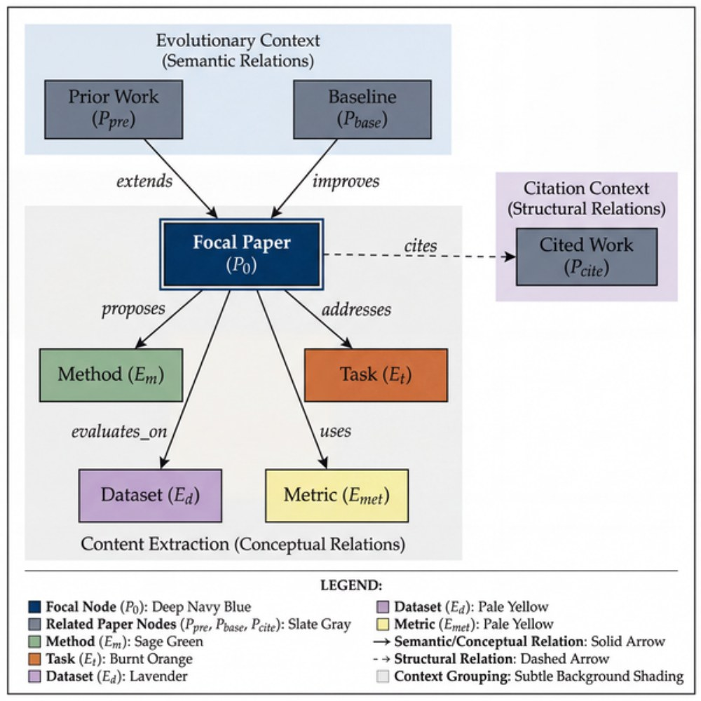

Two EMNLP 2026 papers are on arXiv with code: StateTrack and SurveyGraph.两篇 EMNLP 2026 论文已公开于 arXiv 并开源代码：StateTrack 与 SurveyGraph。
ReMCTS (EMNLP 2026) and our ACM MM 2026 paper on object-dependent concept brittleness are on arXiv with code.ReMCTS（EMNLP 2026）与 ACM MM 2026 论文 Interpreting Object-Dependent Concept Brittleness in Text-to-Image Diffusion Models 已公开于 arXiv 并开源代码。
New preprint on how LLM agent handoffs erode workflow constraints: When “Must” Becomes “Maybe”.新 Preprint When “Must” Becomes “Maybe”: Erosion of Workflow Constraints in LLM Agent Handoffs，研究多智能体交接过程中工作流约束的流失。
Three papers accepted to EMNLP 2026.三篇论文被 EMNLP 2026 接收。
One paper accepted to ACM MM 2026.一篇论文被 ACM MM 2026 接收。
02
About the Lab实验室简介
MUSE Lab studies multimodal understanding and generation. We want generative AI that is controllable, interpretable and trustworthy, and genuinely useful in people's lives.
MUSE Lab 研究多模态理解与生成。我们希望生成式 AI 可控、可解释、值得信任，并真正走进人们的生活。
We are a research group at the College of Artificial Intelligence, Shenzhen University, led by Yifan Yuan.
实验室隶属于深圳大学人工智能学院，由袁一帆助理教授负责。
Our work spans five directions: trustworthy multimodal generation, multimodal understanding and applications, emotion AI, AI safety and embodied AI. Starting from how diffusion models and multimodal LLMs work inside, why they succeed and why they fail, we carry that understanding into real settings such as video, virtual try-on, emotional companionship and robotics.
我们的研究围绕五个方向展开：多模态可信生成、多模态理解与应用、情感智能、大模型安全与具身智能。从扩散模型和多模态大模型的内部机理出发，研究它们为何成功、为何出错，再把这些理解带到视频、虚拟试衣、情感陪伴、机器人等真实场景中。

Principal Investigator实验室负责人
Yifan Yuan 袁一帆袁一帆 Yifan Yuan
Assistant Professor, College of AI, Shenzhen University深圳大学人工智能学院 助理教授 · 硕士生导师
-
Multimodal · 多模态
Images, video and language, modelled together.
联合建模图像、视频与语言。
-
Understanding · 理解
Knowing what a model sees, and why it fails.
看懂模型理解了什么、为什么会出错。
-
Synthesis · 生成
Generating and editing content with precise control.
精确、可控地生成与编辑内容。
-
Explainability · 可解释
Opening the black box, so that people can trust it.
打开黑箱，让人能够信任。
10+papers published篇已发表论文
7in JCR Q1 journals and CCF-B or higher venues篇 SCI 一区期刊与 CCF-B 及以上会议论文
4papers at ACM MM and EMNLP 2026篇 2026 年 ACM MM、EMNLP 论文
5research directions个研究方向
03
Research Directions研究方向
From the inner workings of diffusion models and multimodal LLMs to real settings: video, emotion, safety and robotics.从扩散模型与多模态大模型的内部机理，到视频、情感、安全与机器人等真实场景。
Trustworthy Multimodal Generation多模态可信生成
Taking multimodal LLMs and diffusion models from "able to generate" to "trustworthy": outputs grounded in evidence, errors noticed before they surface, and corrected while the model is still generating.
让多模态大模型与扩散模型从“能够生成”走向“可信生成”：内容有依据，出错之前能察觉，生成过程中能纠正。
Predicting and steering hallucinations幻觉风险的预测与干预
Multimodal LLMs describe images fluently but sometimes state things the image does not support. We read the model's internal states as it generates to predict the hallucination risk of what comes next, carrying on when the risk is low and intervening at inference time, without retraining, when it is high.
多模态大模型能看图写出丰富的文字，却会输出“看似合理、实际没有视觉依据”的内容。我们读取模型生成时的内部状态，提前预测下一段内容的幻觉风险：风险低就继续生成，风险高就在推理阶段动态干预，无需重新训练。
Inside diffusion models扩散模型的内部机理
Analysing SD-VAE, DINOv2 and DiT features along the denoising trajectory, we find that early steps fix the subject's structure and layout while middle steps refine text-related details. We also study why concepts keep failing on particular objects (ACM MM 2026) and where semantic discrepancy in image translation comes from (IEEE/CAA JAS 2025).
分析 SD-VAE、DINOv2 与 DiT 在去噪过程中的特征，发现早期决定主体结构与布局、中期细化与文本相关的局部细节；并研究概念为何在特定物体上反复失效（ACM MM 2026），以及图像转换中的语义偏差从何而来（IEEE/CAA JAS 2025）。
Attribute binding and control属性解耦与可控生成
An LLM parses the prompt into a scene graph, so any object–attribute combination is supported. Dynamic text embeddings and counterfactual constraints reduce semantic entanglement, attention constraints with layout priors place attributes at pixel level, and constraint strength adapts across denoising steps. Earlier work (DO-FAM, VR-FAM) studied disentangled editing of facial attributes.
借助大模型把提示词解析成场景图，支持任意“对象—属性”组合；用动态文本嵌入和反事实约束减轻语义纠缠，结合注意力约束与布局先验实现像素级定位，并随去噪时间步自适应调整约束强度。早期工作 DO-FAM、VR-FAM 研究了人脸属性的解耦编辑。
Reliable language models and agents大语言模型与智能体的可信生成
How models remember, understand and use information. StateTrack tests whether a model keeps following earlier instructions in long dialogues: restating a rule is not the same as obeying it. ReMCTS uses reflective tree search for more reliable code, and we study how workflow constraints erode when agents hand tasks to each other.
研究模型怎样记住、理解并使用信息：StateTrack 检查模型在长对话中是否一直遵守先前的要求，“会复述”不等于“会执行”；ReMCTS 用反思式树搜索生成更可靠的代码；我们还研究多智能体交接过程中工作流约束的流失。

Papers代表论文
Projects相关项目
- Reliability Evaluation and Controllable Editing Mechanisms for Generative Image Editing生成式图像编辑的可靠性评估与可控编辑机制研究Shenzhen University Research Start-up Fund for Young Faculty深圳大学青年教师科研启动经费
Multimodal Understanding & Applications多模态理解与应用
Teaching models to understand video, images and text, and putting that understanding to work: video retrieval and editing, quality checks for virtual try-on, and help with writing academic surveys.
让模型读懂视频、图像与文字，并把这种理解落到具体场景：视频检索与剪辑、虚拟试衣的质量诊断、学术综述写作。
Moment retrieval and highlight detection视频时刻检索与高光检测
Given a video and a natural-language query, the model finds the most relevant moment on the timeline and scores every clip for how much of a highlight it is: semantic retrieval and highlight extraction in one model.
给定一段视频和一句自然语言查询，模型在时间轴上定位最相关的片段，同时为每个片段的精彩程度打分，把“按语义检索关键片段”和“自动提取精彩时刻”合为一体。
Story-aware video editing懂剧情的智能剪辑
An editing system that follows the plot and the audience's feelings: it understands complex requests, pulls the key shots out of large amounts of footage, and produces cuts that fit the brief while keeping the original story and mood.
构建能“读懂”剧情、“共情”观众的剪辑系统：准确理解复杂的用户意图，从海量素材中提取核心镜头，生成既符合需求、又保留原片叙事与情绪氛围的视频。
Distortion detection for virtual try-on虚拟试衣失真检测
A fine-grained distortion framework that combines a taxonomy of artefacts, a VQA-annotated dataset and fine-tuned multimodal LLMs, so try-on systems can tell whether a result is distorted, what kind of distortion it is, where it is, and why.
建立细粒度的失真检测框架：把失真分类体系、视觉问答标注数据集与多模态大模型微调结合起来，让虚拟换装系统能判断有无失真、区分失真类型、定位失真位置并解释原因。
Grounded survey writing有依据的综述写作
SurveyGraph first maps how papers extend, compete with and share resources with each other in a methods–entity knowledge graph, then retrieves, outlines and writes along the field's evolution, so that key claims in a survey trace back to the literature.
SurveyGraph 先把论文之间的延续、竞争与共享资源关系整理成“方法—实体知识图谱”，再据此检索、列提纲、按领域演化脉络写作，让综述中的重要判断都能回到文献。


Papers代表论文
Projects相关项目
- Intelligent Models for Multimodal Information Retrieval, Review and Moderation多模态信息检索、审查与管控智能模型研究Industry project with China Mobile横向项目，中国移动
Emotion AI情感智能
Helping AI understand human emotion accurately and faithfully, respond with the right kind of support, and grow into companions with long-term memory and a steady personality.
一方面让 AI 更准确、可信地理解人的情绪，另一方面让它在理解之后给出恰当的支持，并探索有长期记忆、有稳定人格的 AI 伙伴。
Multimodal emotion recognition多模态情绪识别
Combining speech, facial expression and language, we move from fixed emotion categories to open-vocabulary, fine-grained recognition, and on to descriptive recognition that explains in words what the emotion is and why it arises.
融合语音、表情与语言的互补信息，从固定的情绪类别走向开放词汇的细粒度情绪识别，再到用自然语言解释“是什么情绪、为什么产生”的描述型情绪识别。
Hallucinations in emotion descriptions情绪描述中的幻觉
Generated emotion descriptions can cite evidence that is not in the input. We define four kinds of hallucination (invented perceptual evidence, cross-modal misattribution, emotional over-inference and made-up causes) and build diagnostics, moving from descriptions that sound right to descriptions the input actually supports.
模型生成的情绪描述可能包含输入中不存在的证据。我们系统定义了感知证据幻觉、跨模态错归因、情绪过度推断与叙事/因果幻觉四类问题，并构建诊断与评估方法，从“能生成情绪描述”走向“能生成可信的情绪描述”。
Emotional support conversation情感支持对话
Recognising a user's emotional state, situation and needs; choosing among comforting, empathising, asking, advising and encouraging; adjusting as the user's state changes over many turns; and evaluating whether the support truly fits.
识别用户的情绪状态、处境与潜在需求，选择安慰、共情、询问、建议、鼓励等合适的策略，在多轮交互中跟随用户状态调整，并评估支持是否真正贴合情境。
Companions with memory and personality有记忆、有人格的 AI 伙伴
From chatbots to companions with long-term memory and cognitive schemas: Big-Five personality realised through a mixture of LoRA adapters, so that personality can be tuned, with replies that adapt to intimacy and emotional state. The same techniques help build simulated conversational agents for mental-health assessment research.
从 Chatbot 走向具有长期记忆与认知图式的 AI 伙伴：以大五人格为基础，用混合专家式的 LoRA 适配器实现可调节的人格，并结合亲密度与情绪状态动态调整回复风格；相关技术也用于构建心理健康评估研究中的模拟对话智能体。
Papers代表论文
Projects相关项目
- AI Virtual Patients for Clinical Teaching in Gastroenterology面向消化科临床教学的AI虚拟病人技术研究与应用Guangdong Natural Science Foundation, General Program广东省自然科学基金面上项目
AI Safety大模型安全
Explaining why safety alignment works and why it can be bypassed, and building a defence loop for multimodal models: interpretable monitoring, controllable intervention and continual strengthening.
解释安全对齐为什么有效、为什么会被绕过，并为多模态大模型构建可解释监测、可控干预与持续强化的防护闭环。
Jailbreaks and defences越狱攻击与防御
A jailbreak gets the model to treat an attack as a higher-priority task, by disguising harmful intent as translation, research or role-play, or by using long contexts, indirect prompt injection and multi-turn manipulation to make it "ignore previous rules". We detect and block attacks in layers on the input, model and output side, backed by continual red-teaming.
越狱的本质，是让模型把攻击指令误当成更高优先级的任务：或把恶意意图伪装成翻译、研究、虚构角色等无害请求，或借助长上下文、间接提示注入与多轮对话诱导模型“忽略此前规则”。我们在输入、模型、输出三侧分层识别与拦截，并坚持持续的红队测试。
Multimodal safety多模态安全
Images widen the attack surface: instructions hidden in posters or screenshots, subtle adversarial perturbations and conflicts between image and text can all pull a model off its safety alignment. We study cross-modal consistency checks so that models read images correctly while spotting and refusing malicious instructions in them.
视觉输入让攻击面从文本延伸到图像：海报或截图里藏着的指令、细微的对抗扰动、图文之间的冲突，都可能让模型偏离安全对齐。我们研究跨模态一致性校验，让模型正确理解图像，同时识别并拒绝其中的恶意指令。
Adaptive safety alignment自适应安全对齐
Built around one representation of the model's safety boundary: an interpretable risk score with clear geometric and statistical meaning, lightweight defences that need no retraining, and continual adversarial updates against unseen jailbreaks and out-of-distribution risks.
以统一的“安全边界”表征为核心，构建具有明确几何与统计意义的可解释风险度量，设计无需重新训练的轻量防护机制，并面向未知越狱与分布外风险持续对抗更新。
Embodied AI具身智能
Robots that perceive, plan and act reliably through long tasks: generating long action sequences straight from multimodal perception, and improving through interaction after deployment.
让机器人在长周期任务中看得懂、想得清、做得稳：从多模态感知直接生成长序列动作，并在部署后通过与环境交互持续改进。
End-to-end long-horizon decisions端到端长程决策
Cascading a VLM planner with a small executor splits planning from acting. We build end-to-end long-horizon decision models that map streaming multimodal perception directly to long action sequences, for more robust and coherent long tasks.
“VLM 高层规划 + 小模型底层执行”的级联范式使规划与执行割裂。我们研发端到端的长程时序决策大模型，实现从多模态流式感知到长序列动作输出的直接映射，提升长周期任务中的鲁棒性与连贯性。
Test-time adaptation for VLA modelsVLA 模型的测试时自适应
Vision–language–action models depend on large demonstration sets and generalise poorly once deployed. Our test-time training framework, driven by the robot's own feedback, lets it refine its policy through interaction, with no human reward signal.
现有视觉—语言—动作（VLA）模型严重依赖海量示教数据，部署后泛化能力差。我们构建由自主反馈驱动的测试时训练框架，让机器人在没有人工奖励信号的情况下，通过与环境交互自我迭代、优化策略。
Fine manipulation for industry工业场景中的精细操作
Fine manipulation with dexterous hands, and generalisation across settings, for industrial tasks such as moving and opening boxes.
面向搬运、开箱等工业任务，研究灵巧手的精细操作与跨场景泛化。
Projects相关项目
- Embodied-Intelligence Foundation Models for Industrial Humanoid Robots人形机器人工业具身智能基座大模型与垂直领域示范应用Shenzhen Key Industry R&D Program深圳市重点产业研发计划
04
Publications论文成果
Featured代表性论文

Interpreting Object-Dependent Concept Brittleness in Text-to-Image Diffusion Models
Text-to-image diffusion models usually follow prompts well, yet we found an overlooked failure: a concept such as “ink sketch” works for most objects but fails again and again on a few — Flux draws grapes as an ink sketch but keeps painting a cake in full color. These failures persist across random seeds, revealing systematic blind spots in how the model has learned the concept rather than sampling noise. We train sparse autoencoders at every denoising step, compare successful and failed generations in this sparse space where concepts become separable, locate the missing or weakened concept dimensions, and repair them at inference time by nudging features toward a concept prototype built from reliable samples, with no retraining. Across multiple diffusion backbones this markedly improves concept consistency, text fidelity and repair success, and the earlier the intervention, the stronger the correction.
文生图模型通常能很好地按提示词作画，但我们发现了一种被忽视的失败：同一个概念（如“水墨素描”）用在大多数物体上都没问题，却在少数物体上反复失败——Flux 能把“葡萄”画成水墨素描，“蛋糕”却总是彩色的。这类失败换随机种子也照样出现，说明模型对概念的掌握存在系统性盲区，而不是偶然的采样噪声。我们在去噪的每一步训练稀疏自编码器，在这个概念更易区分的稀疏空间里对比成功与失败的生成，找出缺失或减弱的概念维度，再在推理时把特征向由可靠样本构建的概念原型轻量插值，无需重新训练即可修复。在多种主流扩散模型上，概念一致性、文本忠实度和修复成功率都显著提升，而且越早干预、纠正效果越好。

When LLMs Forget What They Believe: Characterizing State Integrity Collapse in Long-Horizon Dialogues
Assistants must keep obeying user-set constraints — formats, personas, safety boundaries — over many turns, but evaluations mostly test instruction following in a single turn or a short exchange. We identify a subtle but dangerous failure, State Integrity Collapse: asked about it, the model can still restate the constraint, yet its next answers stop following it — unlike ordinary forgetting, this is not fixed by longer context or memory retrieval. We build StateTrack-Bench, which plants one persistent constraint (numerical, format, persona, factual-memory or logical) in a conversation, checks compliance at increasing dialogue depths, and uses a forked recall audit to tell forgetting apart from remembering without complying. Across seven models, 88.6% of failures are such behavioral drift rather than forgetting, and our Structured State Anchoring recovers up to 24.4 points.
对话助手需要在很多轮对话里一直遵守用户设定的约束（格式、角色、安全边界等），但现有评测大多只看单轮或短对话里能否遵守指令。我们发现一种隐蔽而危险的失败：问起来模型还能复述约束，接下来的回答却不再执行——我们称之为“状态完整性崩塌”，它不同于普通的遗忘，单靠更长的上下文或记忆检索解决不了。我们构建了 StateTrack-Bench：在对话中设定一条持续约束（数值、格式、角色、事实记忆、逻辑规则五类），在不同对话深度检验模型是否仍然遵守，并用“分叉回忆审计”区分“记不住”和“记得但不做”。在七个主流模型上，88.6% 的失败属于“记得但不做”的行为漂移而非遗忘；我们提出的结构化状态锚定最多可挽回 24.4 个百分点。

ReMCTS: Reflection-Enhanced Monte Carlo Tree Search for Code Generation
Code written by large language models often looks right yet fails on edge cases and hidden tests, and common self-repair keeps patching a single attempt, so an early wrong algorithmic choice is hard to escape. Existing tree-search methods rank candidates with numeric rewards but do not share the textual diagnoses of failures across branches, and without tests they may mistake missing evidence for success. ReMCTS organizes candidate programs as a search tree, runs them in a sandbox for feedback, keeps each branch's debugging context, stores failure diagnoses in a shared memory that other branches retrieve, and tells failed checks apart from missing evidence. On HumanEval and MBPP it beats direct generation in 8 of 10 model–dataset pairs, and ablations show where the gains come from and where they stop.
大模型写的代码常常“看起来对”，却在边界条件或隐藏测试上出错；常见的自我修复只沿着一次尝试反复打补丁，一旦最初的算法思路错了就很难跳出来。已有的树搜索方法又主要依赖数值奖励，失败时的文字诊断没法分享给其他分支，在没有测试用例时还容易把“缺少证据”误当成“通过”。ReMCTS 把多个候选程序组织成一棵搜索树，在沙箱里执行获取反馈，保留每条分支的调试上下文，把失败经验存入全局记忆供其他分支检索复用，并区分“检查未通过”和“证据不足”。在 HumanEval 和 MBPP 上，ReMCTS 在 10 组模型—数据集组合中有 8 组优于直接生成，消融实验也厘清了收益的来源与边界。

SurveyGraph: Generating Academic Surveys via Methods-Entity Knowledge Graphs
Publications are growing so fast that writing a good survey is ever more costly, and current LLM survey generators mostly retrieve papers as a flat pile of independent documents. A good survey explains how a field evolved — which work extends which, which methods compete, which benchmarks mark turning points — structure that similarity-based retrieval cannot see, so generated surveys read like a collage of summaries. SurveyGraph builds a Methods-Entity Knowledge Graph that records follow-on, competition and shared-resource relations between methods, and uses it as the backbone for core-paper discovery, graph-aware retrieval, outline generation and evolution-aware writing. Graph-aware retrieval nearly doubles recall over flat lexical baselines (p = 0.004), and citation audits find that 80.6% of generated sentences are fully or partly supported by the papers they cite.
论文越来越多，写一篇好的综述越来越费时费力，而现有的大模型自动综述系统大多把文献当作一堆彼此独立的文档来检索。好的综述要讲清楚一个领域如何演化——哪项工作延续了谁、哪些方法相互竞争、哪些基准标志着转折，只按相似度检索看不到这些结构，生成的综述容易变成零散摘要的拼贴。SurveyGraph 构建“方法—实体知识图谱”（MEKG），显式记录方法之间的延续、竞争和共享资源等关系，并以它为主干完成核心论文发现、图感知检索、大纲生成和按演化脉络组织的写作。图感知检索的召回率接近平面检索基线的两倍（p=0.004），引用核查显示 80.6% 的生成句子能在所引文献中找到完全或部分支撑。

Dissecting and Mitigating Semantic Discrepancy in Stable Diffusion for Image-to-Image Translation
When a text-to-image diffusion model is used for image-to-image translation — turning a photo into a painting, say — everything hinges on an initial noise that keeps the original image's information, and the common choice, SDEdit, simply adds random noise to the image. We find that this causes “semantic discrepancy”: the model misreads relations in the image and invents content that was never there, because the noise breaks the image's semantic integrity and makes U-Net upsampling link unrelated regions. We propose a training-free, plug-and-play fix for Stable Diffusion that exploits the determinism of DDIM inversion: a single inversion step of the reference image supplies accurate features and correlations, which replace the faulty ones in generation. Across translation tasks on COCO, ImageNet and ImageNet-R, it reduces semantic discrepancy and improves fidelity, outperforming PnP and similar methods with fewer priors while running 11.2× faster.
用文生图扩散模型做图像转换（比如把照片变成油画）时，关键是找到既保留原图信息、又便于转换的初始噪声，常用的 SDEdit 做法是直接给原图加随机噪声。我们发现这会引起“语义偏差”：模型误解原图中物体之间的关系，凭空生成原图里没有的内容；剖析 Stable Diffusion 的网络后，我们定位到原因是加噪破坏了图像的语义完整性，使 U-Net 上采样时在不相关的区域之间建立了错误关联。我们提出一种免训练、即插即用的方法，利用 DDIM 反演的确定性，只需对参考图做一步反演，就能得到正确的特征和关联，用来替换生成过程中的错误部分。在 COCO、ImageNet 和 ImageNet-R 的多种图像转换任务上，该方法有效缓解了语义偏差、提升了保真度，用更少的先验超过 PnP 等方法，速度快 11.2 倍。
All Publications全部论文
2026
- ACM MM 2026
- EMNLP 2026
- EMNLP 2026
- EMNLP 2026
-
Preprint 2026
When “Must” Becomes “Maybe”: Erosion of Workflow Constraints in LLM Agent Handoffs [Paper]
2025
- IEEE/CAA JAS 2025
2023
2022
-
ICASSP 2022
VR-FAM: Variance-Reduced Encoder with Nonlinear Transformation for Facial Attribute Manipulation [Paper]
2020
-
JIG 2020
Spatiotemporal Attention Network for Microexpression Recognition [Paper]
Research and business collaborations welcome欢迎科研与商业合作
Interested in working with us? Write to us by email.
如有合作意向，欢迎通过邮件与我们联系。
- Email邮箱yifanyuan@szu.edu.cn
- Address地址College of Artificial Intelligence, Shenzhen University, Shenzhen, China中国 · 深圳 · 深圳大学人工智能学院
- Code代码github.com/MUSE-AI-Lab
- PI负责人Yifan Yuan · yifanyuan.com袁一帆 · yifanyuan.com